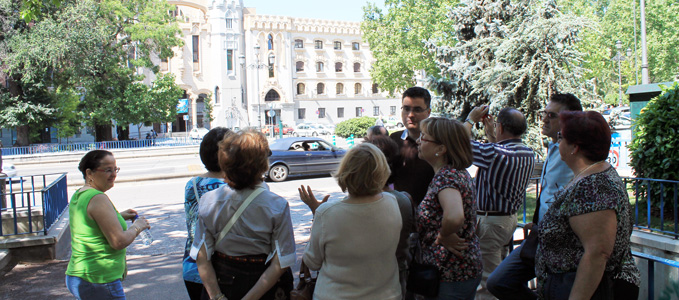

An empty plaza with no plan
"The time was during Franco. Spain was living in a situation of international isolation because the Western powers had turned their backs since Spain had supported Italy and Germany in the Second World War. But Franco started international tourism, and it was with President Eisenhower where he started the process of opening in the 1950’s. When Eisenhower visited in December of 1959, the Madrid Tower was not yet finished, but they were able to light up ‘IKE’ in the windows as a welcome to the president".

"In the Gran Via, they projected two large skyscrapers that for a long period were the highest buildings in Spain, one built between the late 40s and early 50s, and the other between late 50s and early 60s."
Óscar da Rocha Aranda, a historian and author, has told these descriptions many times before. He is part of a new organization in Madrid called Ahora Arquitectura, formed by a group of architects and historians, whose main objective is “the promotion and dissemination of Architecture, Urbanism and Art, as well as the defense and preservation of Architectural Heritage, Urban and Artistic”. Óscar leads architectural tours around the city, focusing on specific areas, neighborhoods, or types of architecture.
Today, the focus is on Plaza de España. After a pause, Óscar continues with the story of the Madrid Tower, the tallest building there, and one of the most prominent buildings in Madrid. The tower, until 1967, was the tallest concrete building in Europe, with a height of 465 feet high in the corner of the Plaza de España.
"In the Gran Via, they projected two large skyscrapers that for a long period were the highest buildings in Spain, one built between the late 40s and early 50s, and the other between late 50s and early 60s.
This skyscraper is built entirely of reinforced concrete, which for that time was a waste of material, something very complicated because Spain was enduring a period of famine. Next to it, Edificio España maintains a decorative reminiscence of Spanish Baroque influence. The other, the Madrid Tower, eliminates these elements and is a more of a modern skyscraper. You have no decorative elements, combines not brick with stone, is cleaner and purer, closer to modernity. For a time it was the reinforced concrete skyscraper highest in Europe, because in Europe at that time many were already using the metal structure typical of skyscrapers. This was used for a symbol of the Franco era in Spain, although isolated from the other powers, it still had economic potential to do things like this".
He continues with the tour, speaking about each building and its significance.

For tourists and citizens visiting the Plaza de España today, one can only see a few windows lit at the top at night, the only part of the building still occupied. What was once filled with airline offices and other businesses, the lower level of the building is now empty. Situated in the center of the city in a prominent location at the western end of the Gran Vía, one can find Plaza de España, after Puerta del Sol and Plaza Mayor, just off Plaza de Oriente and its Royal Palace, one of the most emblematic palaces in the capital of Spain. However, from the four buildings that are listed at the two highest levels of protection by the city government, three are currently partially or completely empty. The fourth building is privately owned, currently filled and well restored.
“This used to be a very important and symbolic square, at the center of the square we can find the monument dedicated to Cervantes, the author of Don Quijote. but it is true that right now this square is suffering a process of abandoning. in the past until 10 years ago this square was definitely more alive,” said Emanuele Pierobon, urban planner and professor in the Department of Urbanism at the Universidad Europea de Madrid.
The eighth tallest building in madrid with 25 floors, the Edificio España, built in 1953, “has a staggered silhouette of four heights, and enjoys considerable protection from the City Council itself”, described by the City Hall’s tourism website. “Today it is empty and under restoration to be converted into luxury houses. Only the façade and the hall will be kept intact, since the rest of the structural elements have been modified,” they say.
“This used to be a very important and symbolic square, at the center of the square we can find the monument dedicated to Cervantes, the author of Don Quijote. but it is true that right now this square is suffering a process of abandoning.”
Emanuele Pierobon
Another of the protected buildings, the Consejería de Cultura, also known as the Real Compañía Asturiana de Minas, built in 1895, sits in the corner of the Plaza. It has the highest level of protection in the square and is on the list of Bien de Interes Culturales in Madrid. The list of Bien de Interes Culturales is protected under a countrywide law enacted in 1985 that establishes standards and protections for those monuments listed. The monuments are under the jurisdiction of each community. The building “suffered various alterations” in 1997 and was abandoned for some time until the government of Madrid took over, according to the City Hall. During its last inspection on November 30, 2012, the building was listed as “unfavorable” because of the general state of the structure and foundation, the general state of the facade, exterior and walls, and the state of the elements of existing access. In 2001, the inspection was listed as “favorable.”
Mr. Pierobon says the intention was not to abandon the square; with the Edificio España, “The intention was to make a huge work of restoration of the whole building. The owners wanted to maintain part of the building as a hotel and part to reconvert into luxury flats. Basically the economical crisis started in 2008 and due to that fact, all these plans went wrong.”
The previous Mayor of Madrid, Alberto Ruiz-Gallardón, proposed a project in 2005 that had “prestigious architects and planners worldwide” participate and give proposals for a remodeling of part of the city. The project would include “ burying six kilometers from the M-30 and the recovery of 500,000 m2 of green areas” and would also “take advantage of the river for recreational and sporting purposes, create pedestrian and bicycle paths, optimize the Matadero facilities and Fruit Market, and introduced inside public transportation to connect the area with other significant areas.”
However, this June El País reported that this plan had been postponed by the new mayor, and would not be carried out. With the plan on hold, there are not many options for rehabilitating the square.
In June 2013 during a discussion on the state of the city of Madrid, the Mayor, Ana Maria Botella Serrano said, “Planning should be an ally against the crisis. The planning can encourage us to be a city of opportunity... we are providing a series of investment projects that will enhance our city.” The plan for Plaza de España is an installation of a new hotel currently where the unprotected, empty buildings are located. “In these actions in which we work together with the private sector, it brings together other municipal character.”
Pablo Rivera, architect and founding partner of Ahora Arquitectura, thinks that this is not a unique situation. “Its a bigger problem. we can talk about the Canalejas operation, things are starting to move ahead with that operation but at the price of destroying almost everything.”
Referring to the status of the square he says, “It’s difficult that it gets worse. It’s becoming almost a safety problem.The Plaza is a prominent square but it has a difficult location, its a problem for the buildings, some are half buried in a tunnel.”
From a city planning point of view, Mr. Pierobon believes there could be an explanation for what has happened, using the plaza “ as an example of a process that is taking place all over Spain, we have to take note of this fact that all these businesses which used to occupy the center of the city are now displaced towards the outskirts of the city. That’s why these buildings are remaining empty.”
Unfortunately for now, all plans to refurbish the square are at a halt for the near future.